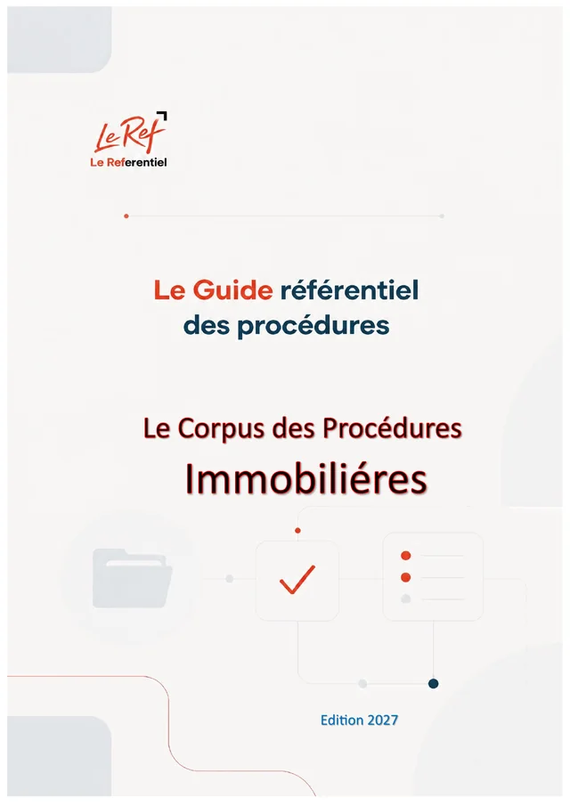

Maroc · IMMO · Édition 2026
Immobiliers, lotissements et constructions
Le Corpus des Procédures Immobilières
Guide pratique des procédures et démarches à l'usage des investisseurs et des promoteurs
- 129paragraphes
- 65chapitres
- 14parties
- 66fichiers JSON
- 79pages (PDF)
Disponible prochainement (option d'achat)
Pages préliminaires et annexes
Contenu
129 paragraphes · 65 chapitres · un fichier JSON par chapitrePartie 1Qui décide, et sur quelle base ?
11 paragraphes
1.2 Les acteurs et leurs pouvoirs réels
- 1-010Les acteurs et leurs pouvoirs réels — présentation
- 1-011Le président du conseil communal : la signature
- 1-012Le gouverneur et le wali : substitution, contrôle, démolition
- 1-013L'agence urbaine : l'avis qui décide
- 1-014Le guichet unique et le comité d'urbanisme
- 1-015Le CRI et la CRUI : la porte des investisseurs
- 1-016Les intervenants techniques et notariaux
Partie 2Avant d'acheter : l'audit du terrain
14 paragraphes
2.2 L'audit foncier
Partie 3Concevoir : intervenants, normes et environnement
8 paragraphes
Partie 4Obtenir les autorisations : les procédures pas à pas
21 paragraphes
Partie 5Chantier, achèvement et exploitation
5 paragraphes
Partie 6Quand le dossier se bloque : refus, silence, infractions, expropriation
9 paragraphes
6.1 Refus, silence et recours
- 6-001Exiger une décision motivée (loi 03-01)
- 6-002L'inaction du président : la substitution du gouverneur
- 6-003Agir en justice contre une commune : le mémoire préalable
- 6-004Contrôler la régularité d'un acte communal avant de contracter
- 6-005Se renseigner : le droit d'accès à l'information (loi 31-13)
- 6-006Grille de réflexes
Partie 7Outils pratiques au profit des promoteurs
11 paragraphes
Partie 8Complément : la loi 55-19 (pièces, délais, silence)
9 paragraphes
8.1 La loi 55-19 : le socle de toutes les démarches
- 8-001Complément : la loi 55-19 (pièces, délais, silence) — présentation
- 8-002Ce que la loi change
- 8-003Les pièces : ce que l'administration ne peut pas vous demander
- 8-004Le dépôt et le récépissé (art. 10 à 14)
- 8-005Délais de traitement (art. 16 à 18)
- 8-006Le silence valant accord (art. 19 et 20)
- 8-007Le recours administratif (art. 21 et 22)